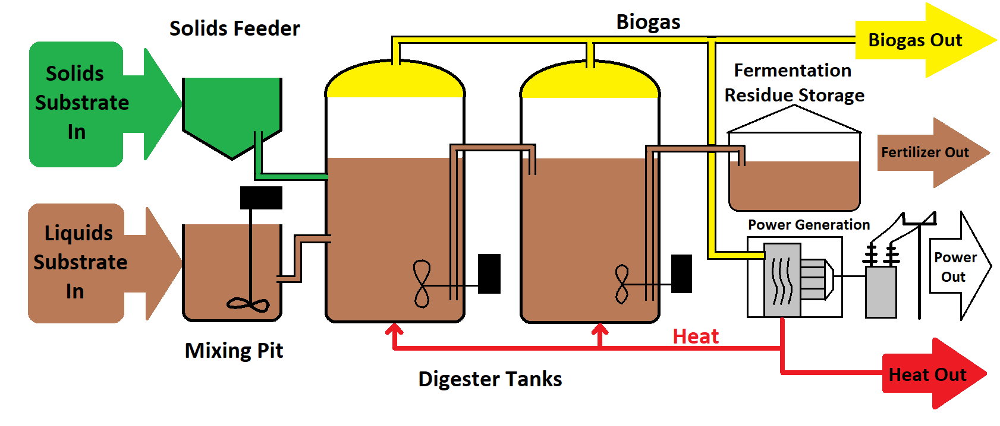

Activity 2: Biomass-Based Biogas Generation System

Biogas production is a sustainable method of converting organic waste into renewable energy through anaerobic digestion. The diagram shows the working of a biogas plant designed for a dairy farm handling cattle waste. Organic waste, such as dung and slurry, is fed into a mixing pit and then sent into digester tanks where bacteria decompose the biomass in the absence of oxygen, producing a mixture of methane (CH₄) and carbon dioxide (CO₂).
Working Process: The produced biogas is collected at the top of the digester and can be used for electricity generation, heating, or cooking. The remaining slurry, called fermentation residue, serves as a nutrient-rich fertilizer. Heat exchangers maintain optimal temperatures inside the digester to ensure efficient microbial activity.
Advantages: Reduces dependence on fossil fuels, converts waste to energy, provides organic fertilizer, and reduces greenhouse gas emissions.
Disadvantages: Requires constant feedstock supply, moderate setup costs, and proper temperature control for efficiency.
Site Selection Criteria: Availability of biomass (animal dung, agricultural residues, food waste), water, and suitable land. Proximity to power distribution or consumption points enhances viability.
Applications: Biogas plants are widely used in rural areas for household energy, electricity generation for farms, and powering small industries. Large-scale systems contribute to municipal waste management and decentralized power generation.